Every reference screenshot with its description, in the order the app was walked. Built from spec.md §9 — regenerate with python3 Docs/reference/magicplan/build-gallery.py. Print to PDF from the browser if you want one.
Described but missing from disk
86-company-profile.jpg
87-watermark-preview.jpg
Workspace & projects
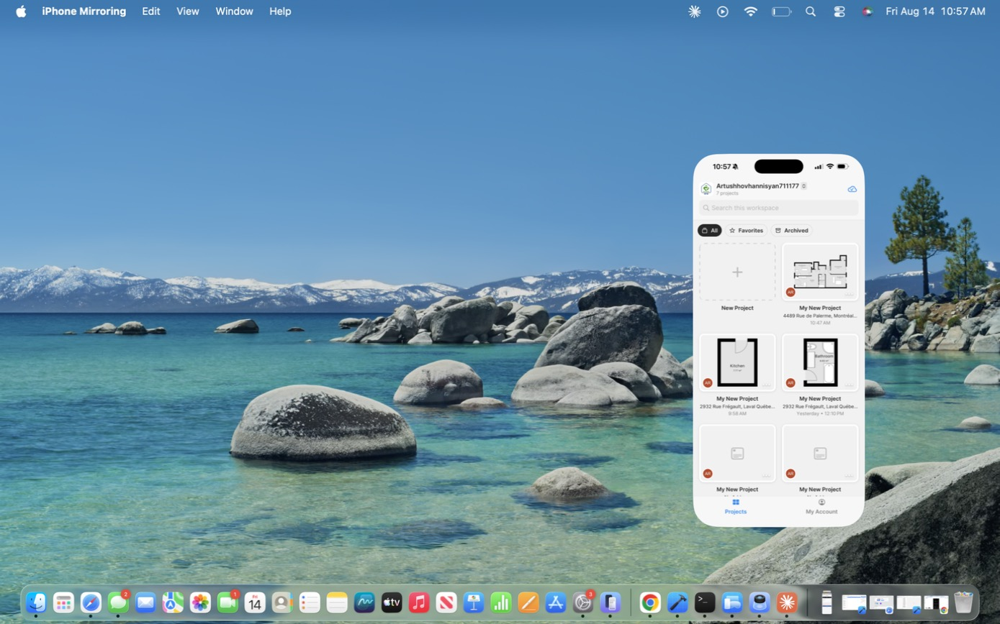
01-projects-list.jpgProjects list — header, search, filter chips, card grid
07-favorites-empty-state.jpgFavorites empty state (offline-access explainer)08-archived-empty-state.jpgArchived empty state (indefinite retention explainer)09-new-project-created-empty.jpgResult of tapping New Project — no wizard10-empty-project-sections.jpgEmpty-section value-proposition captions
12-project-detail-floorplans-photos.jpgFloor Plans and Photos collection rails
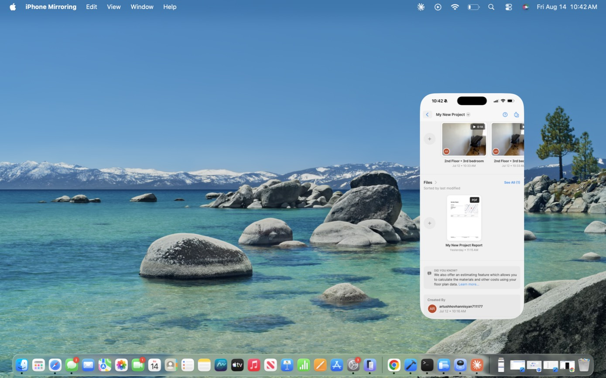
13-project-detail-files.jpgFiles section with generated report PDF
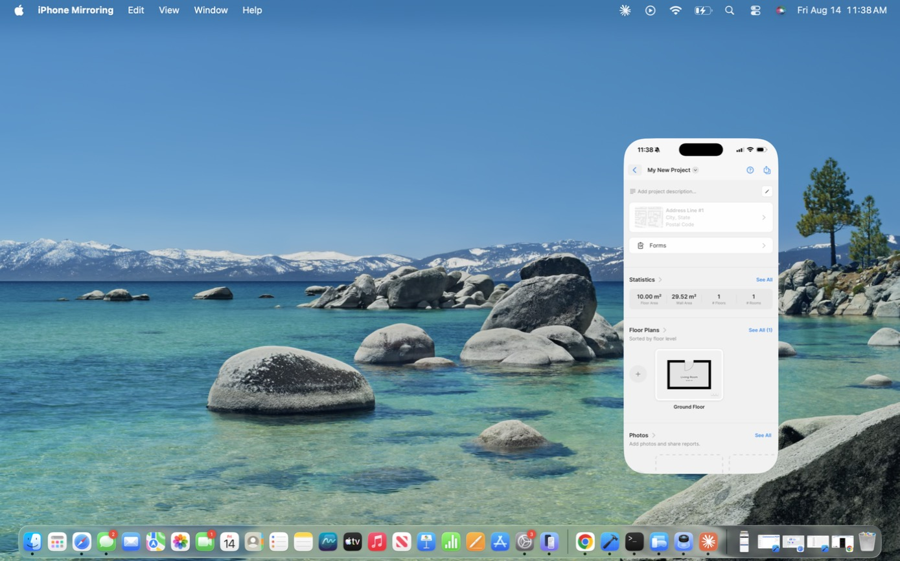
14-project-detail-sandbox.jpgProject detail after adding one floor/room15-project-title-menu.jpgTitle `⌄` menu
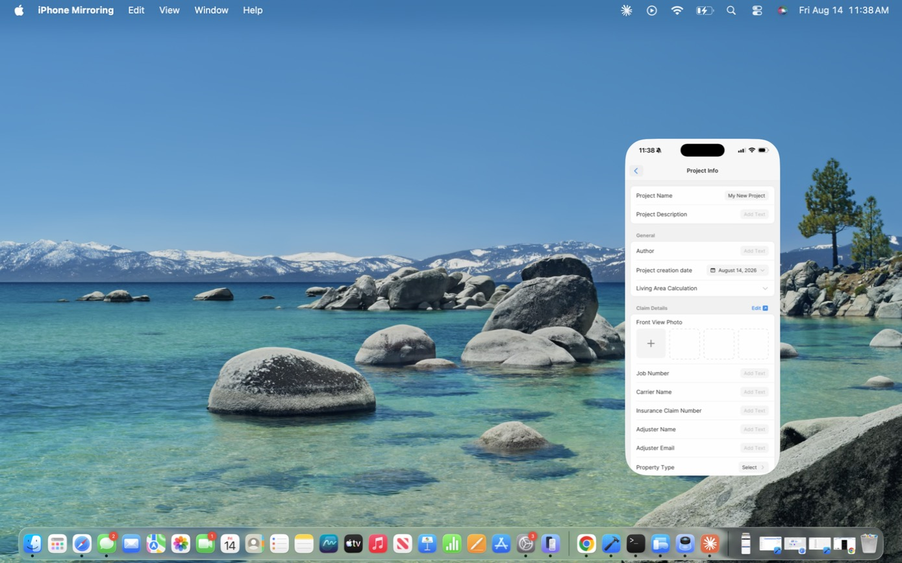
16-project-info-claim-details.jpgProject Info — general + Claim Details field group
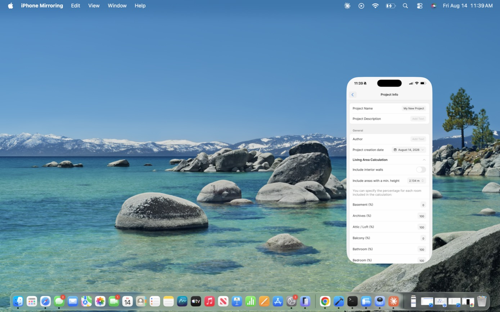
17-living-area-calculation.jpgLiving Area Calculation rules engine18-claim-details-fields.jpgFull Claim Details field list
Editor — chrome & views
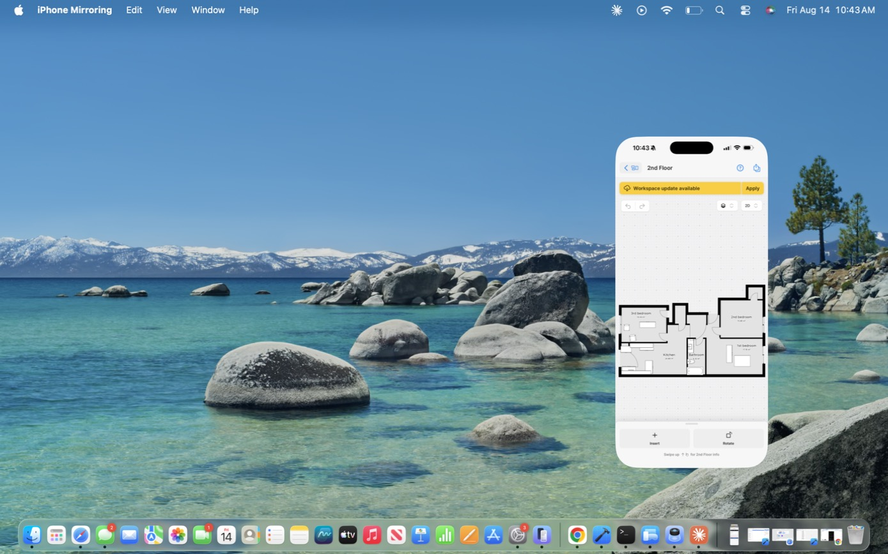
19-floorplan-editor-2d.jpg2D editor, full plan
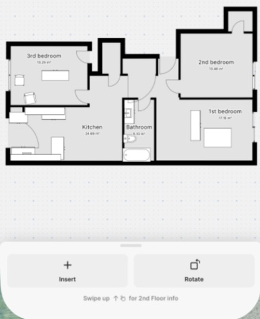
20-floorplan-editor-2d-detail.jpgClose-up: wall rendering, room labels, door swings21-view-mode-menu.jpgView mode menu, Elevation disabled with reason22-view-mode-menu-elevation-enabled.jpgSame menu with Elevation enabled inside a room
65-add-note-modal.jpgAdd Text modal (note attaches to selection)
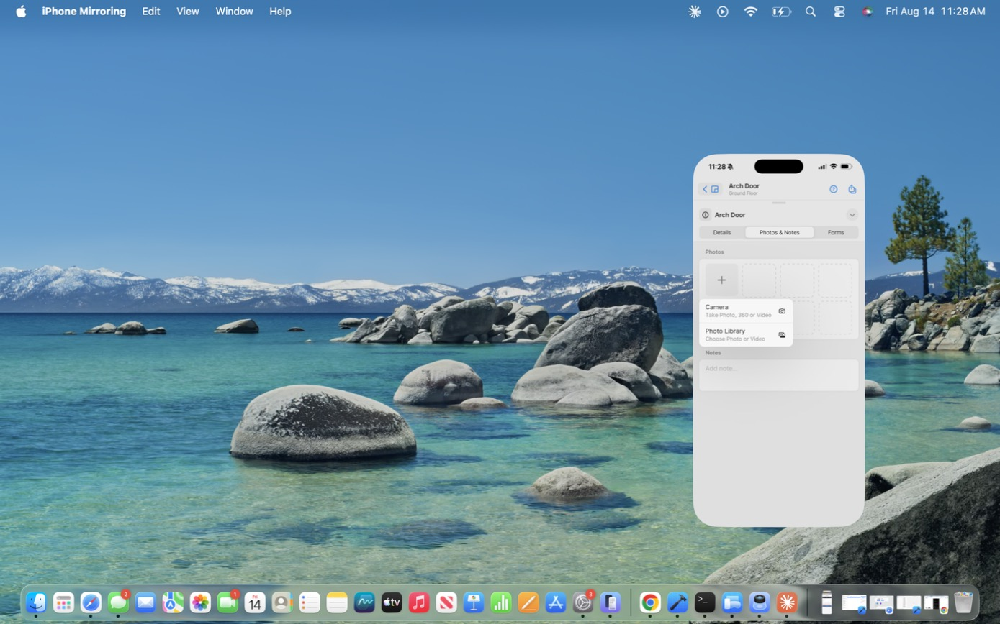
66-photo-source-menu.jpgCamera (Photo/360/Video) vs Photo Library
Statistics
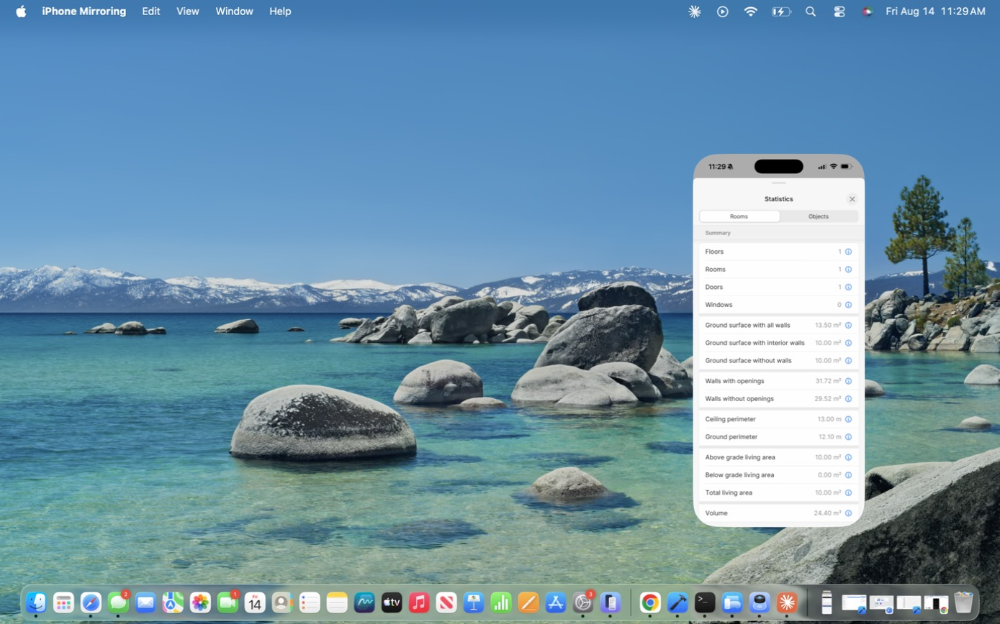
67-statistics-rooms.jpgStatistics — Rooms tab, full metric list
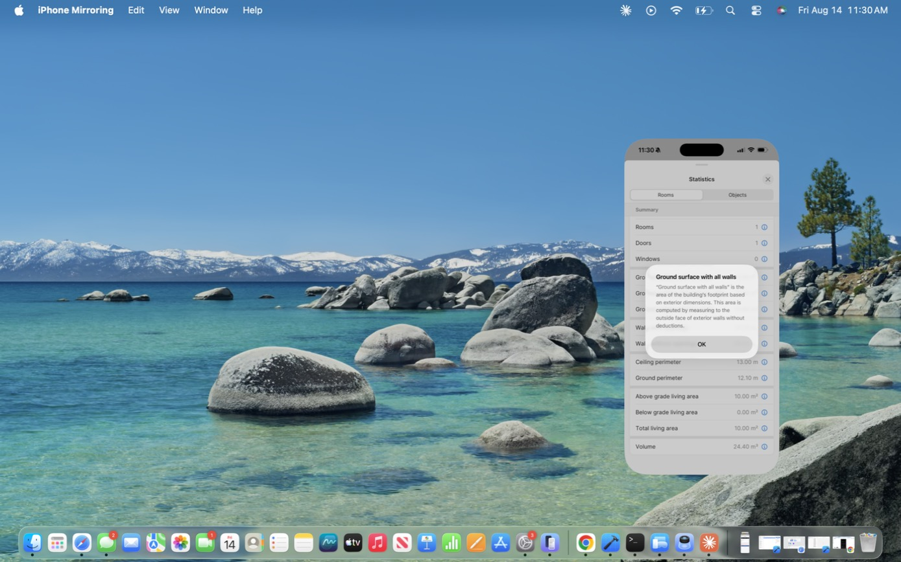
68-statistic-definition-popup.jpg`(i)` formal definition popup69-statistics-objects.jpgObjects tab — bill of materials
Export
70-export-hub.jpgExport Floor Plans hub71-integrations-empty.jpgIntegrations empty state72-select-page-layout.jpgShared Select Page Layout component73-report-pdf-settings-1.jpgReport PDF — layout, page size, scale74-report-pdf-settings-2.jpgReport PDF — dimension toggles75-report-pdf-settings-attachments.jpgInclude Attachments group
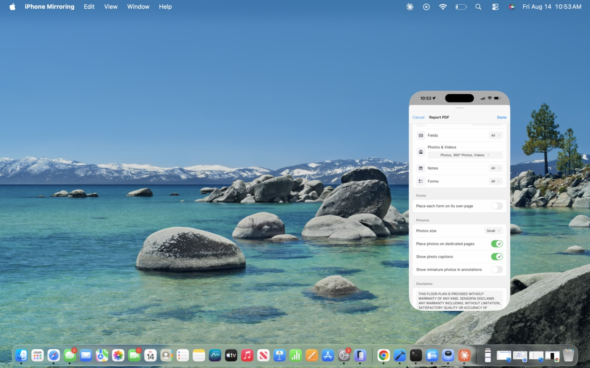
76-report-pdf-settings-pictures.jpgPictures group + disclaimer77-sketch-pdf-settings-1.jpgSketch PDF — adds Hide annotation objects78-sketch-pdf-title-block.jpgTitle Block group
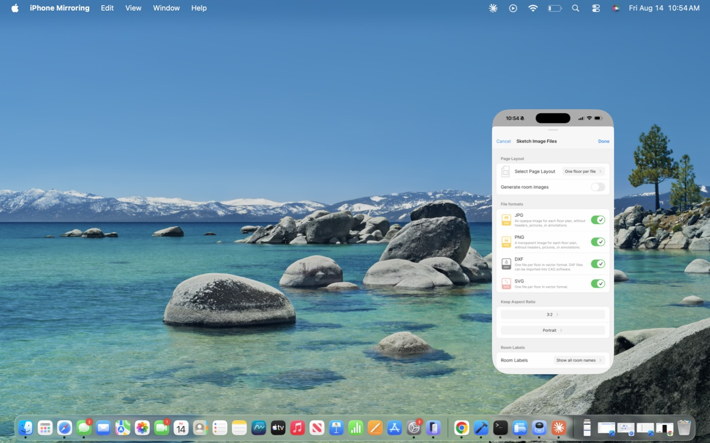
79-sketch-files-formats.jpgJPG / PNG / DXF / SVG with descriptions
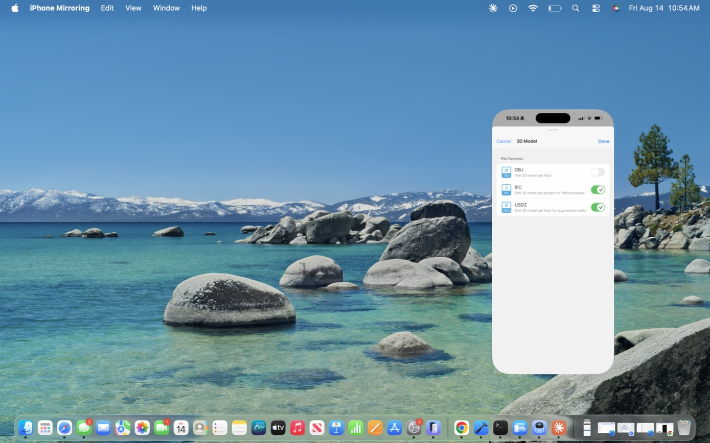
80-3d-model-formats.jpgOBJ / IFC / USDZ
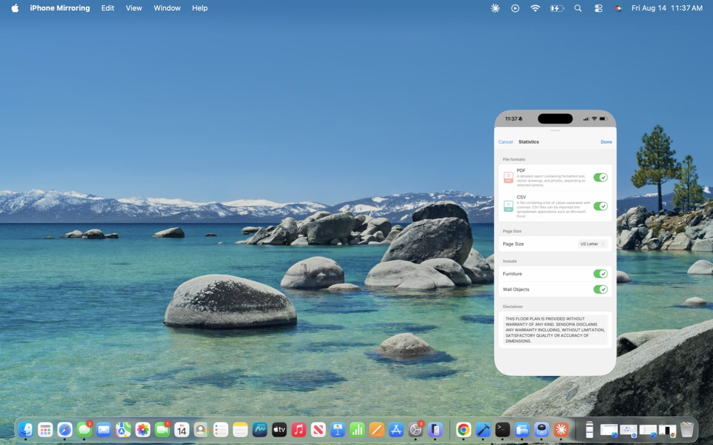
81-statistics-export-settings.jpgPDF + CSV, Include Furniture / Wall Objects
88-camera-blocked-alert.jpgiOS blocking camera over iPhone Mirroring89-scanner-shell.jpgPre-scan shell — "Move iPhone to start"90-scanner-exit-confirm.jpgTwo-step exit confirm
Scan flow — the owner's walkthrough
scan-11-room-type-residential.jpg**Select Room Type — Residential.** Asked BEFORE the camera opensscan-12-room-type-commercial.jpgSelect Room Type — Commercial tab (office vocabulary; see ORD-22)scan-01-best-results-tips.jpgPre-scan briefing — shown **every time**, big red record button to beginscan-02-calibrate-point-at-wall.jpgCalibration — point at a wall before capture startsscan-03-scanning-planes.jpgMid-scan — detected planes drawn over the camera feedscan-04-scanning-minimap.jpgMid-scan minimap — **walls only**, no doors or windowsscan-05-scanning-minimap-2d.jpgMinimap in 2Dscan-07-scanning-3d-pill.jpgThe 2D/3D toggle pill during a scanscan-06-opening-detected-door.jpgObject classification mid-scan — a door recognised, non-blockingscan-08-incomplete-finish-anyway.jpgIncomplete capture — offers to finish anywayscan-09-review-scan.jpgReview — **shape plus Confirm/Discard only**, nothing elsescan-10-scan-another-room.jpgThe loop — scan another room, or Donescan-13-calibrate-second-room.jpgCalibration again for the next roomscan-14-configure-floor-plan.jpgConfigure Floor Plan — once, after Donescan-15-save-videos-consent.jpgConsent to keep the scan videosscan-16-result-2d.jpg**Lands on the drawn 2D plan** — the answer to "where is my scan"scan-17-result-3d.jpgThe 3D view of the same capturescan-18-wall-elevation.jpgElevation mode on a wall